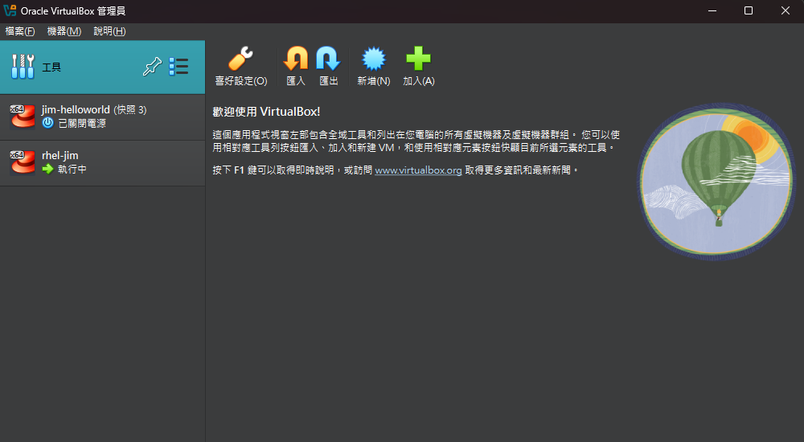
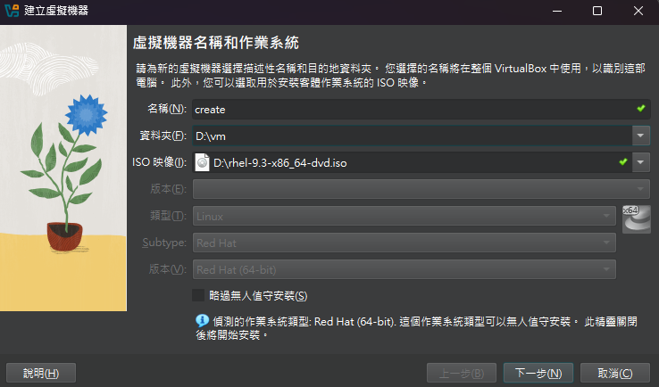
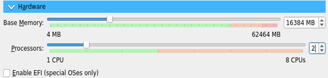
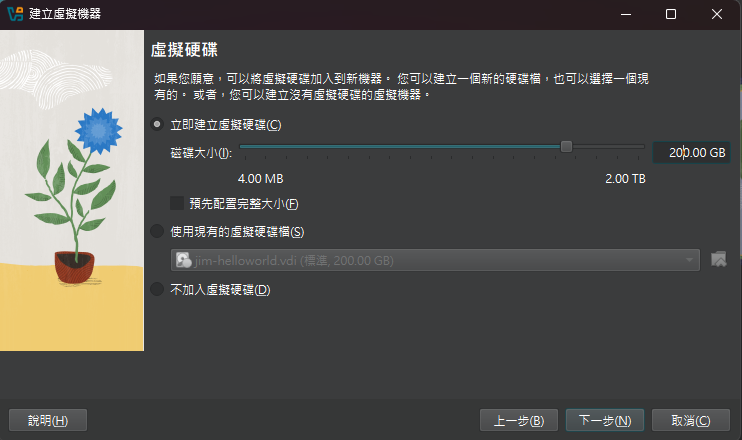
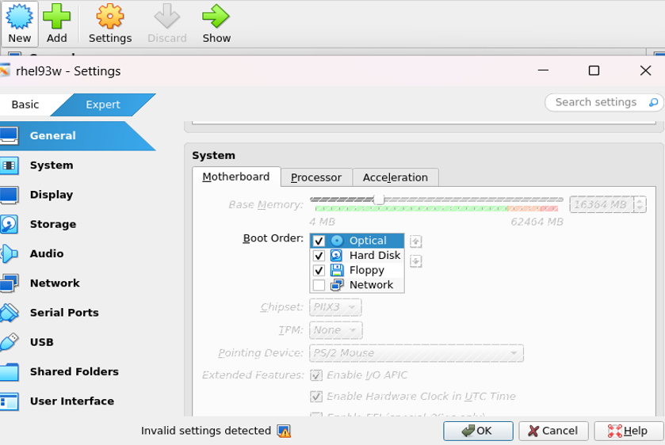
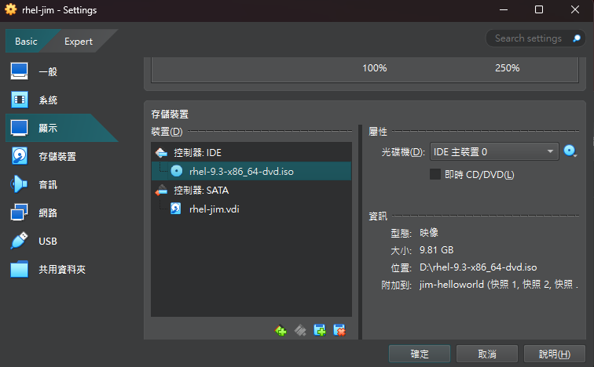
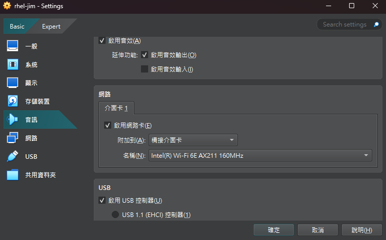
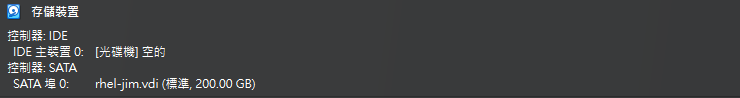

ISO位置: 進入到Nas後路徑: Software\Linux\RHEL\AS9\AS9.3
安裝完virtualbox之後開啟建立VM，點選Tool->新增
創建VM: Name為VM名; Folder為VM存放位置; ISO Image為要輸入的映像檔
host_name/帳號/密碼設定:

範例中給予 16G的RAM(DS安裝最低需求)以及2顆CPU
建立Disk (範例中給予200GB)，完成後先關掉VM
!!!點選"設置"(與"新增"同列)setting裡面在安裝vm的時候開機順序需要先把光碟放在前面!!!
檢查IDE是否有讀取到光碟(更新rpm的時候會用到，以及安裝vm的時候會用到)
將NAT改成橋接介面卡
完成後開機
DISK的切割(點選自訂 -> 確認200G硬碟有被選取 ->完成)
切割細項:
以下出現etl的路徑是上述u01的自定義，若有出現etl的路徑務必要改成當前你自定義的名稱
完整安裝完後，確認映象檔是否去除(重開機的時候檢查，通常做了開機順序調整時系統會自動移除)
VM安裝部分差不多就這樣 可能要注意的就是需要把網路設定成bridege 讓其他硬體也能連接，以及DNS要設定好8.8.8.8(GOOGLE)不能後續update套件的時候可能會無法連上網路
左上角 概覽 -> terminal -> 輸入ip addr show找到IP
開啟Putty輸入IP(port號都為22)
目的：將NAS上的安裝檔放到VM中
1.抓取安裝包 (SFTP)，先進入到自定義的u01資料夾下cd /u01
2.確認 Red Hat 虛擬機能連線到 NAS: ping 192.168.1.17
如果可以成功 ping 到，代表網路通順(持續監聽代表成功)。若無法通，不要進行後續，請先檢查虛擬機網路設定（如：橋接模式 / NAT / Host-only）。
3.輸入以下指令(NAS有開啟 SSH/SFTP 功能)：sftp will@192.168.1.17
- will 是 NAS 的使用者名稱（請確認）
- 若首次連線會問是否信任主機，請輸入 yes
- 然後輸入密碼登入
4.進入到sftp> 後，找到路徑 cd \192.168.1.17\ibm\SW\InfoSphere\DS\IIS11.7\11.7.1.5(可能需慢慢往下找)
5.進到資料夾後下載檔案get IS_V11713_EE_bundle_spec_file.zip以及get IS_V11715_Linux_x86_multi.tar.gz
關閉sftp> exit
6.確認get的檔案
檢查是否可以正常安裝 Red Hat 外所需的套件依賴項:
路徑:cd /etc/yum.repos.d/
先檢查目前是否需要做以下的掛載步驟：yum repolist，若看到 repo 是空的或顯示錯誤（例如 subscription 錯誤），代表系統缺少可用的套件來源。
yum repolist，是用來「查看目前可用的套件倉儲（repositories）列表及其狀態」。
yum repolist all: 檢查是否啟動
若未啟動，執行以下步驟:
1. 重新手動掛載ISO檔(開VM右下角"choose a disk file")
2. 建立檔案 -> mount cdrom: mkdir /mnt/cdrom -> mount /dev/cdrom /mnt/cdrom
3. 進路徑-> copy file: cd /mnt/cdrom -> cp /mnt/cdrom/media.repo /etc/yum.repos.d/(或者cp /mnt/cdrom/media.repo /etc/yum.repos.d/)
4. chmod 644 /etc/yum.repos.d/media.repo -> cd /etc/yum.repos.d/ -> vi media.repo
輸入內容如下(將其他內容刪除，保留以下內容即可):
再次確認:yum repolist -> yum repolist all
預先安裝以下的package清單(版本比建議的新即可):
yum install -y glibc libXp libXau libXext libX11 libxcb libXmu libXtst nss-softokn-freebl bc net-tools lsof libaio gcc-c++ ed perl wget less util-linux sed grep tar libnsl gcc elfutils
確認SELINUX是否為disable: vi /etc/selinux/config， 如果不是，將enforcing改成disable
關閉防火牆輸入:systemctl stop firewalld, 讓防火牆重開機不會起來:systemctl disable firewalld, 確認防火牆狀態:systemctl status firewalld
重新vi: sudo vi /etc/sysctl.conf
輸入以下資訊:
使其生效:sysctl -p, 將open file檔案大小改為10240:ulimit -n 10240
1. 到儲存位置下(以u01為範例，cd到u01)，輸入tar -xvf IS_V11715_Linux_x86_multi.tar.gz (這會自己新增一個is-suite)
2. 將IS_V11713_EE_bundle_spec_file.zip，放到is-suite的資料夾: mv /u01/IS_V11713_EE_bundle_spec_file.zip /u01/is-suite/
確認:ls /u01/is-suite/
3. 在is-suite中 unzip IS_V11713_bundle_spec_file.zip: unzip IS_V11713_EE_bundle_spec_file.zip
4. 在繼續setup之前要先設定hostname:
a. 切到 win 找路徑C:\Windows\System32\drivers\etc，新增hostname(找記事本 -> 右鍵"以系統管理員執行" -> 輸入hostname(e.g. 192.168.1.162 jim))
b. 到linux(或是putty)進行修改，公式：sudo hostnamectl set-hostname 新主機名稱; 範例：sudo hostnamectl set-hostname my-server(**這裡換IP名看看./setup的連結會不會換成IP)
5. 繼續下面操作./setup，將連結複製到瀏覽器並把圖中的jim更名為自己的IP位置